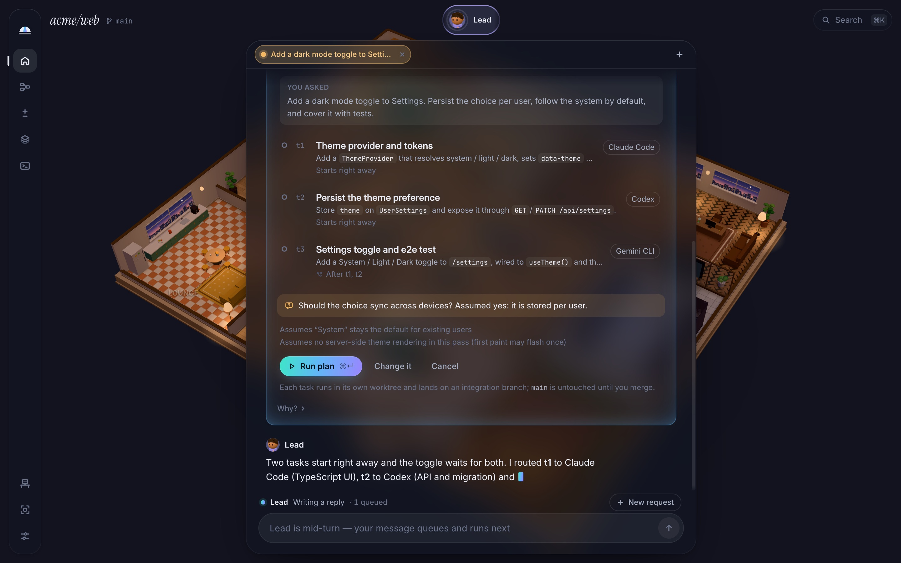

The Lead turns your request into a plan
Ask in plain words. The Lead reads the repo and proposes a small plan: the tasks, the files each one may touch, the checks that prove it works, and the agent best suited to each. Run it, change it or cancel it.
